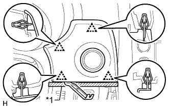

COMBINATION METER > REMOVAL |
| 1. DISABLE AUTOAWAY/RETURN FUNCTION |
Disable the Autoaway/Return function by changing the customize parameter (Click here).
Turn the engine switch on (IG). Operate the tilt and telescopic switch to fully extend and lower the steering column.
Turn the engine switch off.
| 2. DISCONNECT CABLE FROM NEGATIVE BATTERY TERMINAL |
| Condition | Waiting Time |
| Vehicle enrolled in G-BOOK system | 6 minutes |
| Vehicle not enrolled in G-BOOK system | 1 minute |
| 3. REMOVE NO. 2 SWITCH HOLE BASE |
 |
Put protective tape around the No. 2 switch hole base.
| *1 | Protective Tape |
Using a moulding remover, detach the 5 clips and claw.
Disconnect each connector and remove the No. 2 switch hole base.
| 4. REMOVE NO. 1 INSTRUMENT PANEL FINISH CUSHION |
|  |
Put protective tape around the No. 1 instrument panel finish cushion.
| *1 | Protective Tape |
Using a moulding remover, detach the 4 clips.
Disconnect the connector and remove the No. 1 instrument panel finish cushion.
| 5. REMOVE INSTRUMENT CLUSTER FINISH PANEL SUB-ASSEMBLY |
Place protective tape as shown in the illustration.
| *1 | Protective Tape |
Detach the 4 claws.
Detach the 2 clips.
Detach the 4 claws.
Detach the guide and remove the instrument cluster finish panel sub-assembly.
| 6. REMOVE NO. 1 INSTRUMENT PANEL REGISTER ASSEMBLY |
 |
Detach the 5 clips and remove the No. 1 instrument panel register.
| 7. REMOVE COMBINATION METER ASSEMBLY |
 |
Remove the 2 screws.
Detach the 2 clips.
Disconnect the connector and remove the combination meter assembly.